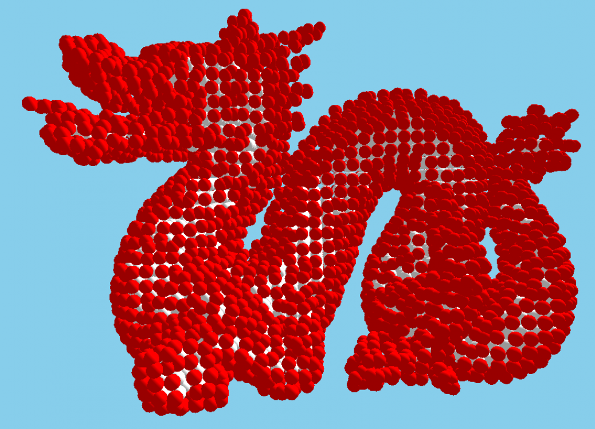
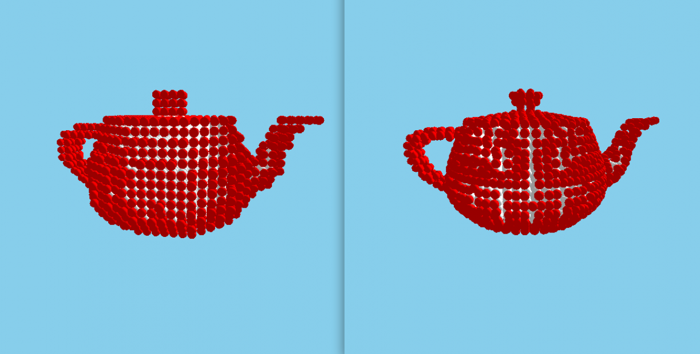
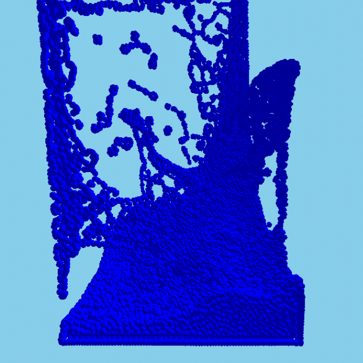
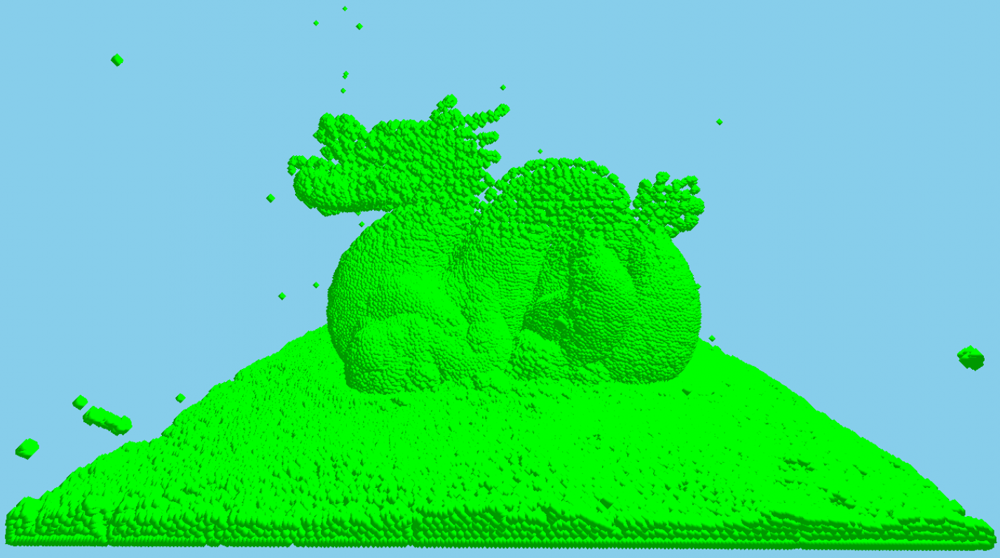
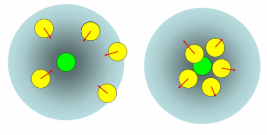
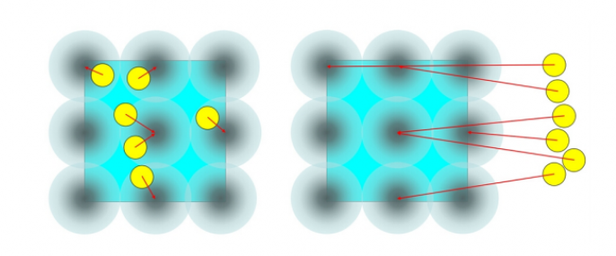
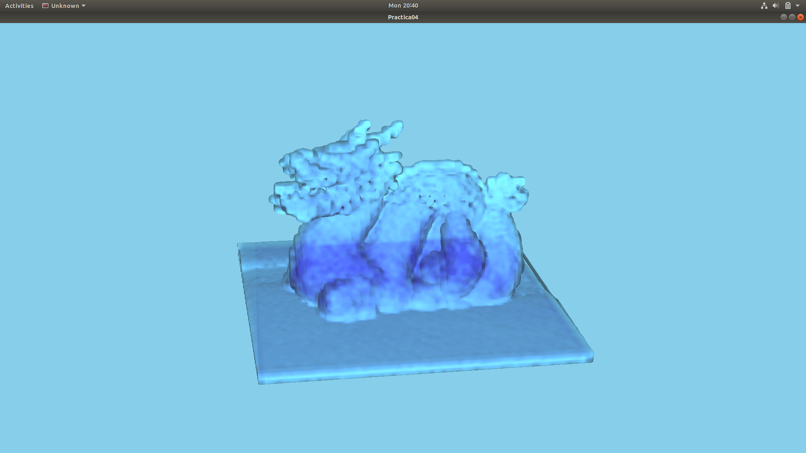

Demo Final en YouTube.
Resumen
En el presente proyecto se trabaja sobre el estudio y replicación del artículo: Position-Based Fluid Control. El artículo propone un método para modelar y renderizar objetos en 3d con la forma de líquidos. Se logra mediante el uso de las partículas de control representados por un volumen en forma de esfera. para obtener las partículas de control se voxceliza a la maya representado cada voxel. Estas partículas tienen tres propiedades que afectan al modelo del fluido. Unas de las propiedades es la densidad constante de la partícula de control que da la forma al objeto. la siguiente propiedad es la elasticidad que permite atraer al líquido hacia el interior de la partícula de control cuando este sale de su volumen de control. la segunda propiedad es la velocidad, el fluido dentro del volumen del control experimentan un velocidad reducida si la partícula de control se mueve para poder compensar el movimiento en caso de que sea brusco. Se replico del artículo el método propuesto de voxcelizacion, el control del fluido mediante las partículas de control y el renderizado del fluido.
voxcelización
El artículo propone un algoritmo de voxelización. Este modifica el método antiguo que se hace mediante voxel antiguamente transformando la malla de triángulo en un donde los triángulos tienen lados menores al la longitud de los voxel que se desean. Luego escogemos la posición de los nuevos voxel en base a los nodos de la nueva malla y si varios coinciden en un mismo, se usa la posición promedio. para finalizar se rellena el modelo. El método de relleno que se utilizó en el proyecto es el algoritmo de flood fill. en este caso se modificó el algoritmo para rellenar un objeto en 3d rellenando como si fuera una imagen por cada sección del modelo como una matriz 2d limitamos el borde esta matriz y llenamos lo que serán espacios vacíos, es decir que se empieza con un modelo totalmente relleno y se limpia lo que no es voxel del que sí. Rellenamos tomado par de ejes como ejemplo primero xy, luego xz y final yz para garantizar un buen relleno y no limitar la capacidad computacional .El objetivo de esto es de obtener un objeto sólido rellenado sin espacios en blancos y no tener problema de figuras que que tenga espacios que no se comuneunque entres si (se aprecia en el ejemplo del dragón que partes de la cola y cabeza no se conectan más por la superficie con el cuerpo).
En la siguiente imagen se observa una comparación de los algoritmos de voxcelización siendo el de la derecha el propuesto por el artículo.
Position Based Fluids
El artículo trabaja con un publicación para modelar el líquido llamado Position Based Fluids. este artículo propone una manera ligera de modelar el líquido. este represente mediante partículas con propiedades como densidad constante, viscosidad, etc. Para el caso del proyecto se utilizó parte del código de este proyecto que utiliza esta publicaión . Es desarrollado en lenguaje c++ con paralización en cuda.
Funcionamiento de las partículas de control
Se mostrarlos las otras funcionalidades del artículo para dar la forma del objeto como de un líquido. Los voxel mostrados en el primer párrafo son en realidad las partículas de control que su objetivo es alterar la física del fluido (que son representados por partículas de líquido) para atraer y servir como pequeños volúmenes de control. Estos se logran a través de tres fuerzas (que son representados en el artículo como variación de de la posición de la partícula del líquido). La primera es para controlar la densidad de la partícula de control. El segundo es para simular el efecto de atracción como un resorte en caso de movimiento o compensar la anterior fuerza y el último para caso de que la partícula de control se mueva, compensar ese movimiento y no deformar demasiado al modelo. Todo fue implementado como se muestra en video pero solo falta dar la apariencia de un líquido.
Como ejemplo de partícula de control se muestra en la siguiente imagen el área que representa y cómo atrae a las partículas del líquido para obtener una densidad constante.
De igual forma se muestra el funcionamiento de la elasticidad que actúa cuando las partículas se alejan del volumen de control.

Las imágenes son del artículo Position-based fluid control
.
Renderización con ray casting
Método de renderizado de objetos representado por mapa de voxeles. consiste en trazar rectas desde el posición de la cámara hacia el mapa de voxeles que esta contenida en un paralelípedo. esta recta debe de atravesarlo y dependiendo de lo que se desea se realiza el efecto. en el caso del proyecto se combinan dos métodos, el Ray Casting con un Isosurface Ray Casting. el primero es para poder obtener el brillo del objeto y el segundo para representar la tralucidad del líquido. Ray Casting consiste en dar el color al objeto mediante la acumulacion de particulas o densidad (como se le conoce al valor que toma el voxel) atravesadas por la recta de visión, en cambio el Isosurface Ray Casting solo busca el primer voxel y calcula su normal en base a su vecindad. para la iluminación se utilizó el modelo Phong.
Fue implementado utilizando OpenGL y sheider con ayuda del repositorio OpenGL-Build-High-Performance-Graphics. Además que se utilizó un textura 3D dinámica. La textura fue modificado por cuda al final de los cálculos de las posiciones partículas del fluido.
